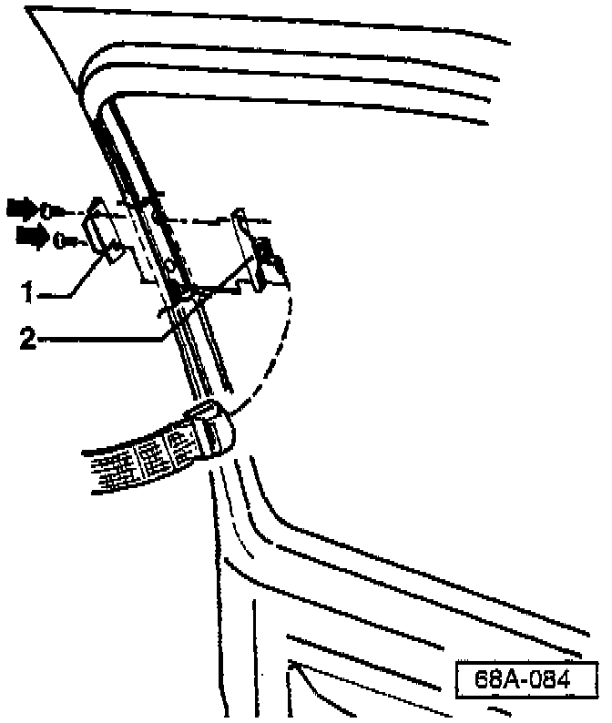

Doors, New - Installing Upper Seat Belt Buckle Support
Group: 69Number: 97-05
Date: Aug. 19, 1997
Subject:
New Replacement Doors, Installation of Upper Seat Belt Buckle Support
Model(s):
Golf Jetta without Airbag 1993 -->
Service
When installing a NEW front door, use the following procedure to locate holes for upper belt buckle support (when necessary):
- Locate dimples in upper door frame.
- Carefully drill two 8 mm holes at these locations.
- Use a round file and rework holes to match upper belt buckle support (if necessary).

- Install upper door catch (anchor plate) -1- and upper belt buckle support (retaining clamp) -2- into door using screws -arrows-.
^ Tightening torque: 15 Nm (11 ft lb)